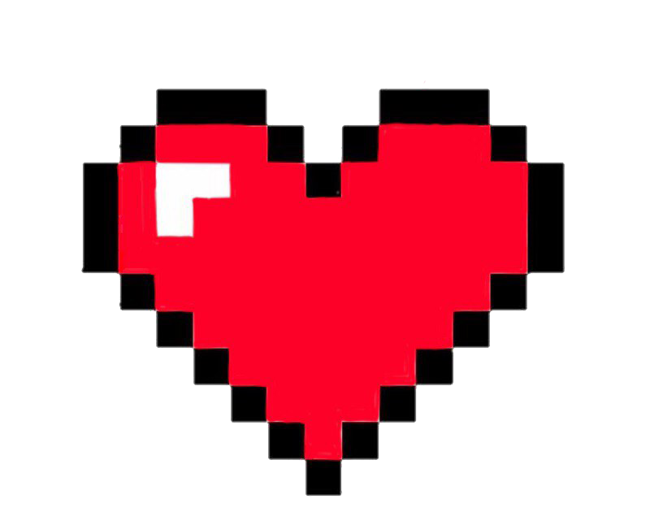

let's restart?
I'm not trying to rewrite what happened.
but I'm still sad about how things ended.
any chance of starting over as friends?

what I mean by restart
I want to be clear because I know I probably made things confusing in the past.
I'm not trying to restart anything romantic or asking you to wait for me. I'm choosing to stay single & focus on myself, but...
I think you were right about our paths crossing for a reason & if friendship is something you'd want too, I'd like the chance to start over.
that's really it.
I'd be happy to have you in my life again.
but I also understand if friendship isn't something you want or something that would feel good for you.
no pressure & no hard feelings either way.
das oki.
I meant it when I said there's no pressure.
I apologize for any discomfort & wish you all the best!